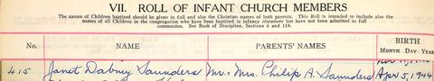

Annie Laurie Linn Ford
1907–1988
Life events
| Born | 28 Feb 1907 · Guyandotte, West Virginia Map |
|---|---|
| Lived | Jul 1907 - 1910 · Bluefield, West Virginia Map |
| Lived | 1912 - 1914 · Welch, West Virginia Map · This is where she saw a car for the 1st time. |
| Lived | 1914 - 1919 · Charleston, West Virginia Map |
| Lived | 1919 - 1920 · House #32, Guthrie, West Virginia Map  |
| Lived | 1920 - 1924 · Dunbar, West Virginia Map |
| Lived | 1924 - 1927 · Dunbar, West Virginia Map |
| Lived | 1924 - 1927 · Morgantown, West Virginia Map |
| Education | 23 May 1924 · Dunbar, West Virginia Map · Graduated from Union District High School |
| Lived | 1927 - 1937 · 809 West Virginia Ave, Dunbar, West Virginia Map |
| Lived | 1927 - 1928 · Chelyan, West Virginia Map |
| Lived | 1928 - 1929 · Morgantown, West Virginia Map |
| Lived | 1929 - 1931 · Nitro, West Virginia Map |
| Lived | 1930 · Morgantown, West Virginia Map |
| Married | 5 Aug 1930 · Philip Arthur Saunders · Dunbar, West Virginia Map  |
| Lived | 1932 - 1936 · Dunbar, West Virginia Map |
| Lived | 10 May 1936 · Charleston, West Virginia Map |
| Lived | 1937 - Aug 1940 · 1772 Victoria Rd, Cleveland, Ohio Map · Age: 33; Marital Status: Married; Relation to Head of House: Wife. |
| Lived | Aug 1940 - Feb 1944 · 5001 Walther Ave, Maryland Map · The family left Baltimore because of a conflict Phil’s job at DuPont. He felt he should have a higher level, engineering job b/c of his degree in it, and his clearance was much higher than his coworkers. |
| Lived | Feb - Jun 1944 · 809 West Virginia Ave, Dunbar, West Virginia Map · They stayed with Linn's mother as Linn had Phlebitis, was pregnant with Dabney. |
| Lived | Jun 1944 - 1971 · 1866 Taylor Rd, East Cleveland, Ohio Map |
| Occupation | 1962 · Brecksville, Ohio Map · English Teacher at Brecksville High School |
| Occupation | 1964 · Brecksville, Ohio Map · English Teacher at Brecksville High School |
| Occupation | 1965 · Brecksville, Ohio Map · English Teacher at Brecksville High School  |
| Lived | 1966 - 1978 · 67 Fords Only Wy, Flat Top, West Virginia Map · 25841; L/L = 37°36'13.7"N 81°03'43.1"W |
| Lived | 1975 · Beckley, West Virginia Map |
| Lived | 1978 - 1988 · 10097 Independence Dr, North Royalton, Ohio Map |
| Died | 4 May 1988 · Middleburg Heights, Ohio Map |
| Lived | 4 May 1988 · Brook Park, Ohio Map |
| Buried | Ford Family section, Athens Cemetery, 507 Cemetery Rd, Princeton, West Virginia Map · 37.41654, -81.01475 The Ford headstone is framed by two overgrown evergreens that obscure the name. Buried there are: Geo M., Annie LL Ford; Harry Hall, Margaret Ford Hall. Linn Ford Saunders, Phil Saunders share a marker - Phil with a Masonic symbol; Linn with a Phi Beta Kappa one. |
Family


Philip Arthur Saunders1904–1970
Photos
Jemima Elizabeth Ford
Margaret Buchanon Ford
George Michael Ford
Annie Laurie Linn
Frederick Wayne Ford
Annie Laurie Linn Ford
Annie Laurie Linn Ford
Philip Arthur Saunders
Annie Laurie Linn Ford
George Michael Ford
Annie Laurie Linn
Frederick Wayne Ford
Annie Laurie Linn Ford
Annie Laurie Linn Ford
Philip Arthur Saunders
Annie Laurie Linn Ford

Annie Laurie Linn Ford
Annie Laurie Linn Ford